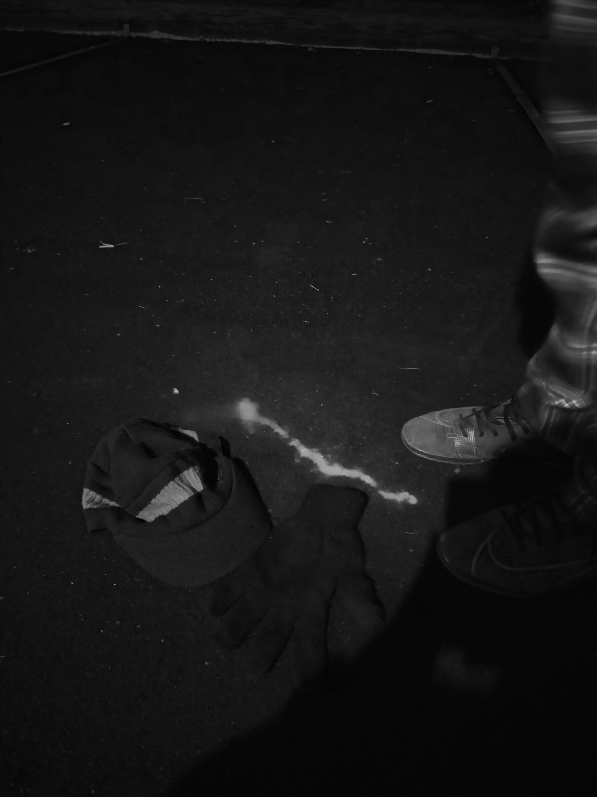

the wayfarer
Home
Blog
Radio
Gallery
About
Music
Welcome to Aditya Tiwari's website.
This site hasn't been designed with cellphones in mind, it's best viewed on a desktop browser.
What's new?
An essay on quick commerce, and the entrepreneurship of apathy (link)
